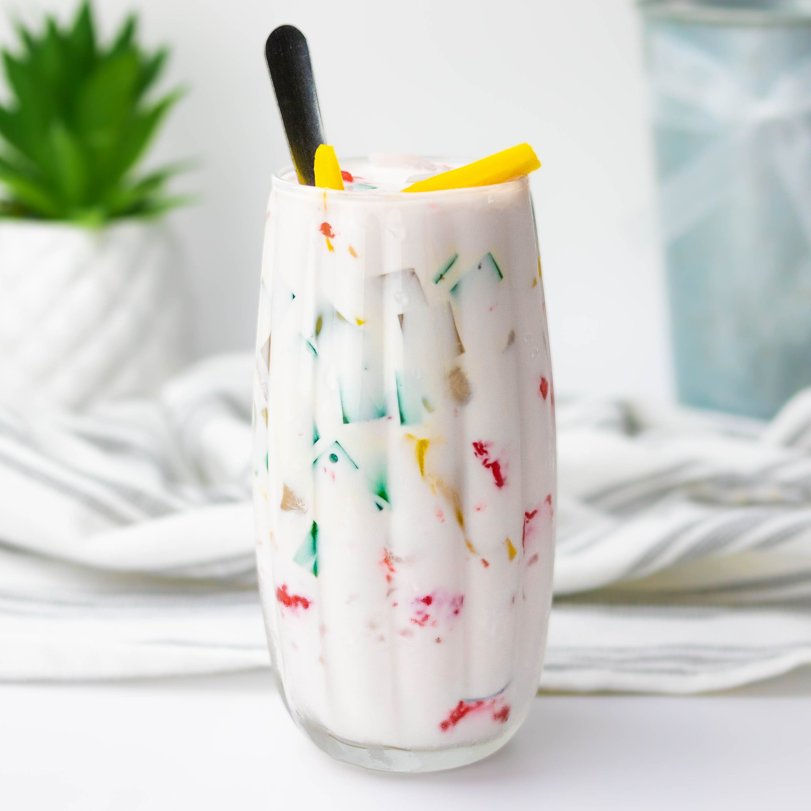

Che Thai

A refreshing, milky dessert. Great for a hot day!
Now it's time for a classic Vietnamese dessert!
I know it has Thai in the name, but I assume it has Thai origins. I don't know. SE Asia have all sorts of similar
dishes.
Ingredients
- Half and half, or substitute with coconut milk if you are lactose intolerant
- Those square coconut jellies I forget the name to. It's something in Spanish.
- Jackfruit
- Lychee
- Other optional fruits and jellies.
Steps
- Pour half and half into a jug.
- If you are using coconut cream instead of half and half or milk or coconut milk,
you have to water it down over the stove, or else it will be too fatty.
- Prepare fruits and jellies accordingly.
- Plop all the fruits and jellies into the milk.
- Serve over crushed ice in a tall cup with a tall skinny spoon!